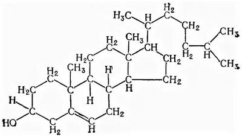

Функции:
Имеет множество функций – Влияние на клеточное деление, активность белковых рецепторов плазматической мембраны, мембраносвязанных ферментов и др.
Локализация:
Как исходит из функций, может содержаться во многих структурах организма. Для определения патологии печени биохимическим методом анализа крови в приоритете его содержание в крови.
Повышенное содержание холестерина из-за липопротеидов α2 и β фракции свидетельствует о холестазе как внутрипечёночном, так и внепечёночном. В том числе низкое содержание холестерина в крови будет свидетельствовать о тяжёлой печёночной недостаточности.
Отдельно повышение и понижение холестерина не определяет холестаз.
Норма холестерина: 5-6 ммоль/л.